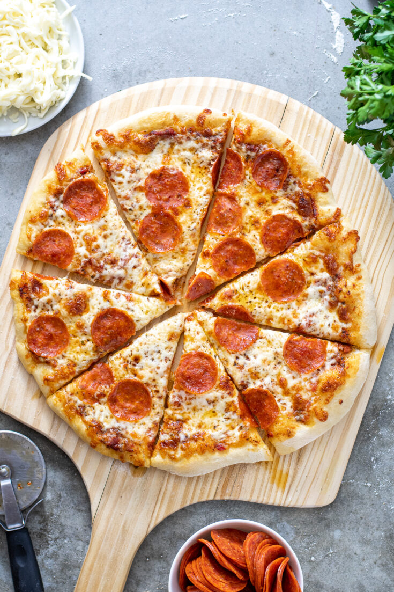

Homemade Pizza

Pizza is a beloved classic that's easy to make at home
This homemade pizza recipe provides a perfect canvas for your favorite toppings, allowing you to create a personalized and delicious pizza right in your own kitchen.
Ingredients
- 1 pizza dough (store-bought or homemade)
- 1/2 cup pizza sauce
- 1 1/2 cups shredded mozzarella cheese
- Your choice of pizza toppings (e.g., pepperoni, bell peppers, onions, mushrooms, olives, etc.)
- 1 tablespoon olive oil
- 1/2 teaspoon dried oregano
- 1/4 teaspoon garlic powder
- Salt and black pepper to taste
Steps
-
Prepare the Pizza Dough:
- If using store-bought pizza dough, follow the package instructions for bringing it to room temperature and rolling it out. If making homemade dough, follow your dough recipe instructions.
-
Preheat the Oven:
- Preheat your oven to the highest temperature it can go, typically around 500°F (260°C) or higher. Place a pizza stone or a baking sheet in the oven while it preheats.
-
Roll Out the Dough:
- On a floured surface, roll out the pizza dough to your desired thickness. Use a rolling pin or your hands to shape it.
-
Prepare the Pizza Toppings:
- Spread the pizza sauce evenly over the rolled-out dough, leaving a small border for the crust.
- Sprinkle a generous amount of shredded mozzarella cheese on top of the sauce.
- Add your chosen pizza toppings. Be creative and generous with your toppings!
-
Season the Pizza:
- Drizzle a tablespoon of olive oil over the pizza.
- Sprinkle dried oregano, garlic powder, salt, and black pepper over the pizza to enhance the flavor.
-
Bake the Pizza:
- Carefully slide the pizza onto the preheated pizza stone or baking sheet in the oven.
- Bake for about 10-12 minutes, or until the crust is golden and the cheese is bubbly and slightly browned.
-
Serve:
- Remove the pizza from the oven and let it cool for a minute or two.
- Slice the pizza into your desired portion sizes, serve, and enjoy your homemade pizza!